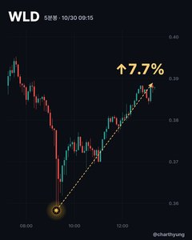
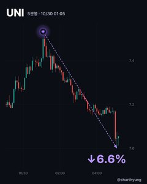
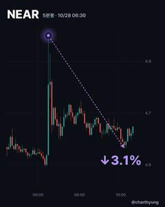

이번 주 시그널 잘 뜬 코인


누르면 차트 카드 · 모든 시그널이 이렇게 가진 않음
-

WLD금색 시그널4시간 최대
-

UNI보라 시그널4시간 최대
-

NEAR보라 시그널4시간 최대
시그널 뜬 뒤 4시간 안 최대 움직임 · 모든 시그널이 이렇게 가진 않음 · 11월 2일 스레드에 올린 것
계산기
골라서 숫자만 넣으면 바로 계산돼요.
추가로 사면 새 평단과 본전까지 남은 %
새 평단
본전까지
총 수량
평단 변화
본전까지 = 추가 가격에서 새 평단까지 · 수수료·펀딩비는 빼고 계산
잃은 만큼 되찾으려면 얼마나 올라야 하는지
필요한 상승률
−10% → +11.1% · −50% → +100% · −80% → +400%
격리 마진에서 대략 어디쯤 청산되는지
청산가 (대략)
진입가에서
거래소·코인·구간마다 다름, 대략값 · 롱 = 진입가 × (1 − 1/레버리지 + 유지증거금률), 숏 = 진입가 × (1 + 1/레버리지 − 유지증거금률)
손절에 걸려도 시드의 몇 %만 잃도록, 얼마나 들어갈지
포지션 크기
필요한 레버리지
손절 때 잃는 돈
포지션 크기 = 시드 × 손실% ÷ 손절폭% · 수수료·미끄러짐은 빼고 계산
들고 있는 동안 내거나 받는 펀딩비
펀딩비
시드 대비
하루(3번) 기준
펀딩비율이 +면 롱이 내고 숏이 받아요(−면 반대) · 8시간마다 정산 기준 대략값, 코인에 따라 4시간·1시간마다 정산하기도 해요
같은 크기로 연달아 손절하면 시드가 얼마나 남는지
남는 시드
복구에 필요한 상승률
매번 남은 시드의 같은 %를 잃는다고 보고 계산
익명 코인 고민상담소
물린 코인,
익명으로 차트 봐 드림
- 이름·연락처 안 받음
- 고른 사연은 스레드에 익명으로 답함
차트에 뜬 것만 보여 드려요. 매수·매도 추천 아님.
접수 안내
- 코인 · 롱/숏 · 평단과 별명을 적어 보내요
- 1~2일 안에 스레드 @charthyung과 🔎 내 답 탭에 답이 올라와요
- 사연이 많으면 골라서 답해요 · 이름·연락처는 안 받아요
내 답 찾기
접수할 때 쓴 별명으로 찾아요.
최근 답변
불러오는 중…